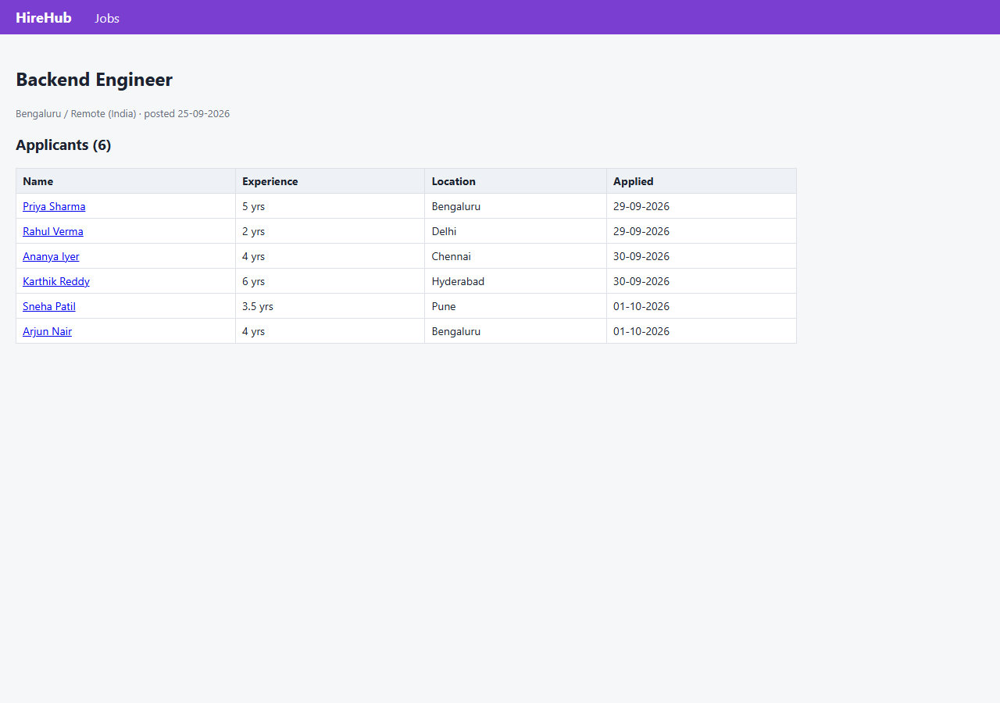
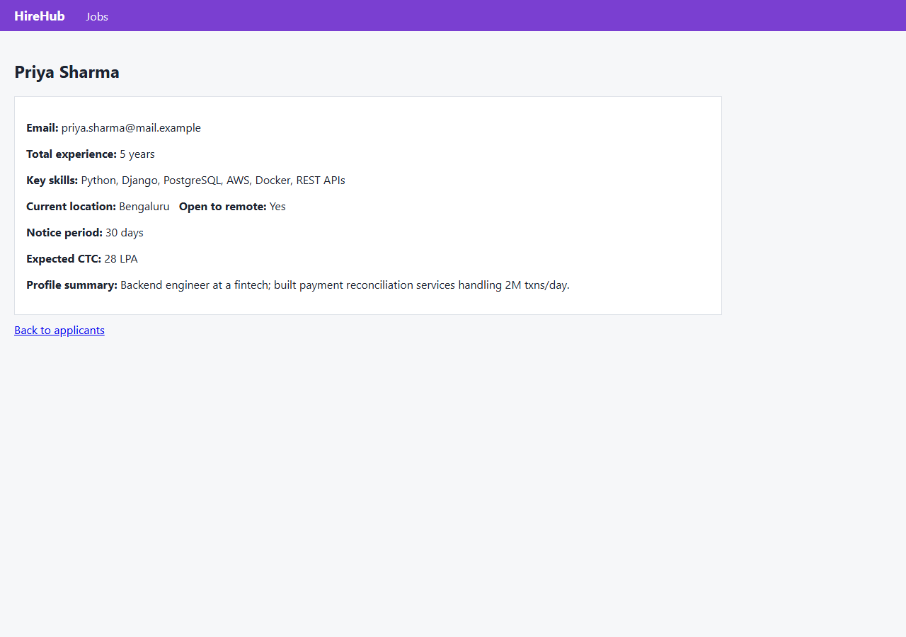
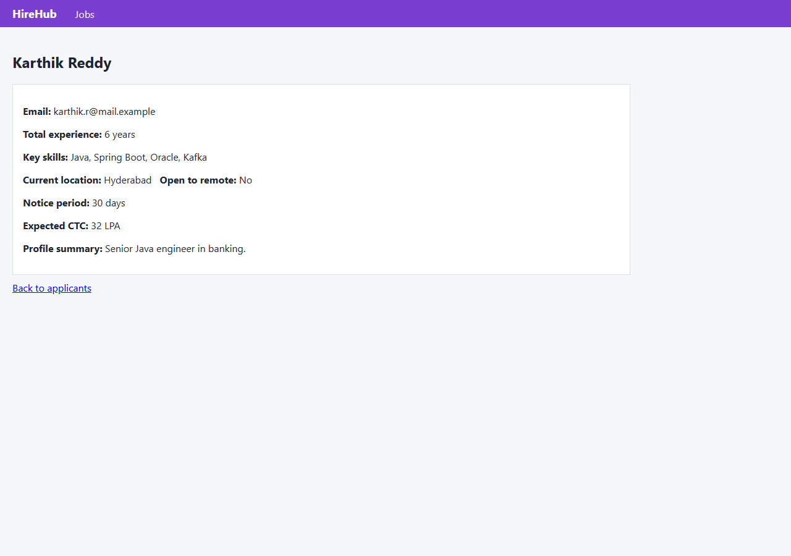
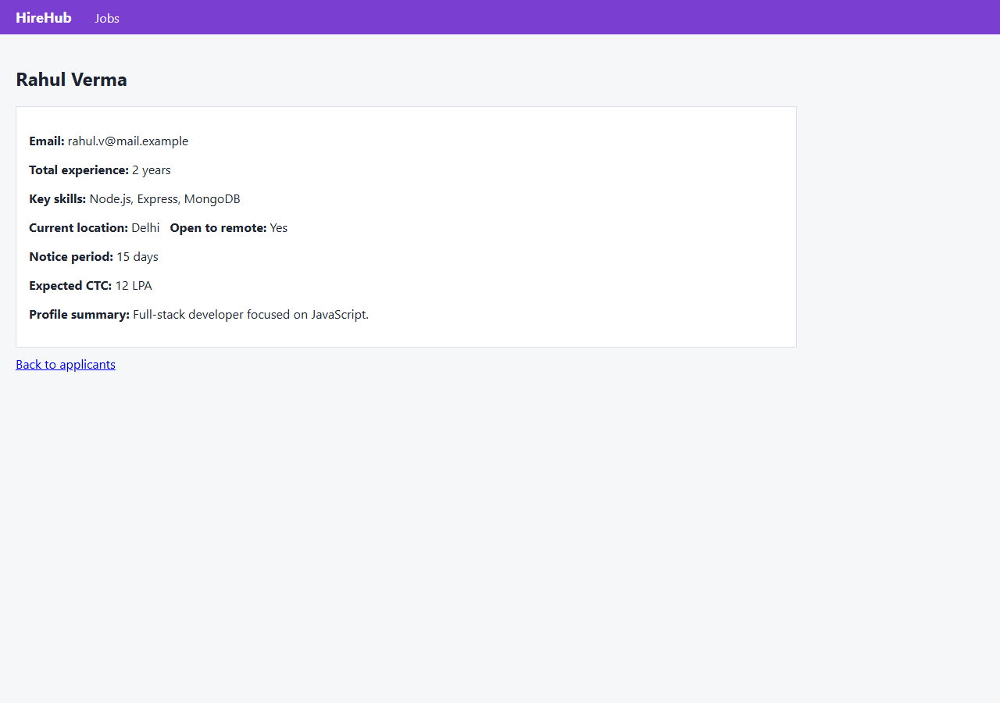
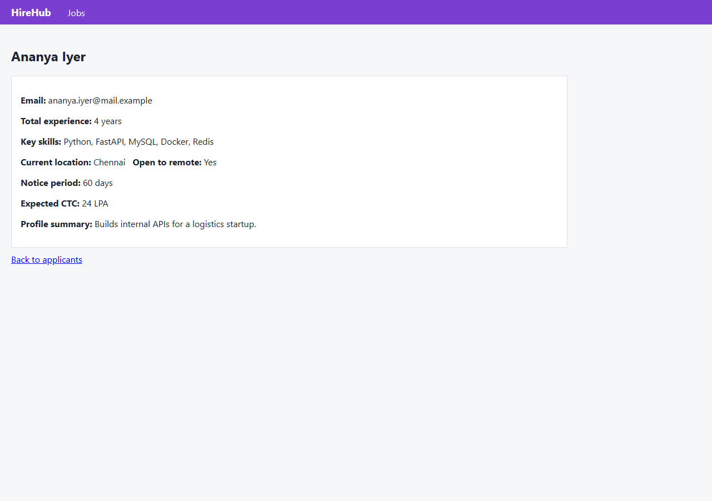
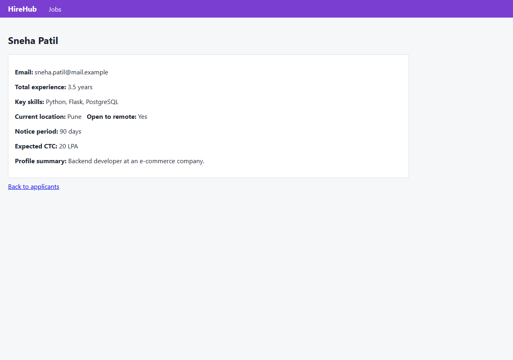
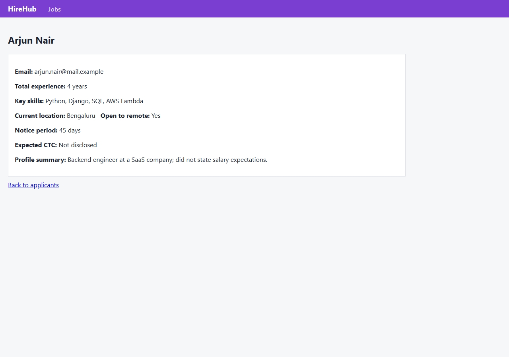
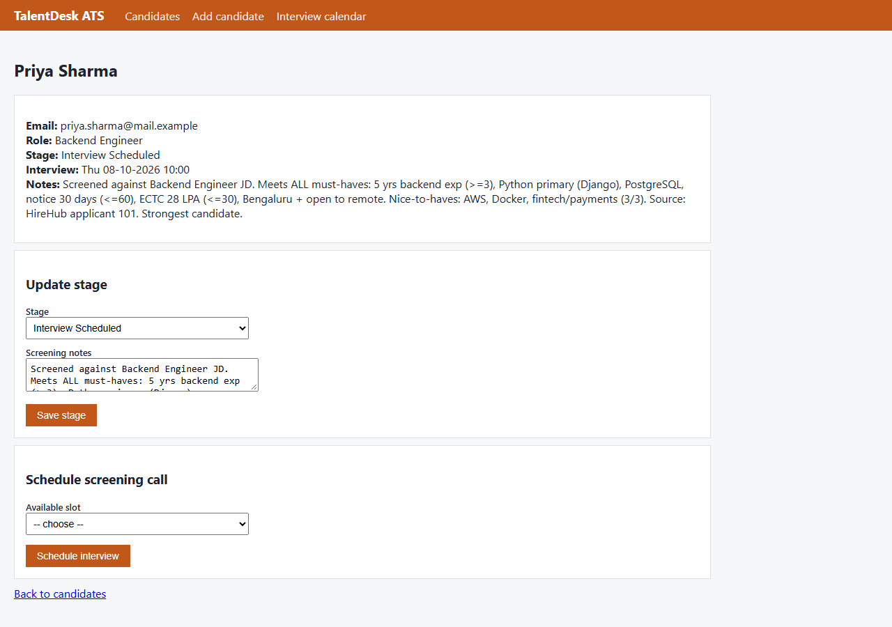

Task: Screen the new applicants for the Backend Engineer role against the job description, record each of them in TalentDesk with the right stage, and book a screening call for the strongest candidate in the first free Thursday slot.
VERIFIED status: success · 40 steps · 165.0s · $0.249 · 49 LLM calls (343 in / 1165332 cached / 12721 out tokens)
Screened all 6 new Backend Engineer applicants from HireHub against the JD and recorded each in TalentDesk with the correct stage and notes: Priya Sharma (Shortlisted -> Interview Scheduled), Ananya Iyer (Shortlisted), Rahul Verma (Rejected: <3yrs exp, no Python, no SQL), Karthik Reddy (Rejected: Java not Python, 32 LPA>30, Hyderabad no-remote), Sneha Patil (Rejected: notice 90d>60d), Arjun Nair (Needs Info: expected CTC not disclosed). Strongest candidate Priya Sharma (all must-haves + all 3 nice-to-haves) was booked for a screening call in the first free Thursday slot, Thu 08-10-2026 10:00, confirmed on the interview calendar.
| Criterion | Verdict | Evidence observed by verifier |
|---|---|---|
| TalentDesk has Priya Sharma (priya.sharma@mail.example), Backend Engineer, stage Shortlisted, with screening notes | pass | TalentDesk /ats shows 'Priya Sharma | priya.sharma@mail.example | Backend Engineer | Interview Scheduled | Thu 08-10-2026 10:00' with full screening notes: 'Meets ALL must-haves: 5 yrs backend exp (>=3), Python primary (Django), PostgreSQL, notice 30 days (<=60), ECTC 28 LPA (<=30), Bengaluru + open to remote. Nice-to-haves: AWS, Docker, fintech/payments (3/3)'. Screening notes present and correct. Current stage is 'Interview Scheduled' rather than literally 'Shortlisted' because the required screening call was booked for her (a forward progression from Shortlisted, per the final criterion). HireHub applicant 101 confirms all underlying facts. Judged substantively satisfied; noted nuance on literal stage label. |
| TalentDesk has Rahul Verma (rahul.v@mail.example), Backend Engineer, stage Rejected, notes citing failed must-haves #1 (<3 yrs), #2 (Python), #3 (SQL) | pass | TalentDesk /ats shows 'Rahul Verma | rahul.v@mail.example | Backend Engineer | Rejected' with notes: 'Rejected - fails must-haves: (1) only 2 yrs backend exp (<3 required); (2) Python not primary language (Node.js/Express); (3) no SQL database (MongoDB only)'. HireHub applicant 102 confirms: 2 years exp, skills Node.js/Express/MongoDB. Matches JD must-haves #1/#2/#3. |
| TalentDesk has Ananya Iyer (ananya.iyer@mail.example), Backend Engineer, stage Shortlisted, with screening notes | pass | TalentDesk /ats shows 'Ananya Iyer | ananya.iyer@mail.example | Backend Engineer | Shortlisted' with notes: 'Meets ALL must-haves: 4 yrs backend exp (>=3), Python primary (FastAPI), MySQL (SQL), notice 60 days (<=60), ECTC 24 LPA (<=30), Chennai + open to remote. Nice-to-haves: Docker, logistics domain (2/3)'. HireHub applicant 103 confirms all facts. |
| TalentDesk has Karthik Reddy (karthik.r@mail.example), Backend Engineer, stage Rejected, notes citing failed must-haves #2 (Python), #5 (32 LPA > 30), #6 (not Bengaluru/remote) | pass | TalentDesk /ats shows 'Karthik Reddy | karthik.r@mail.example | Backend Engineer | Rejected' with notes: 'fails must-haves: (2) Python not primary language (Java/Spring Boot); (5) expected CTC 32 LPA exceeds 30 LPA; (6) based in Hyderabad and NOT open to remote'. HireHub applicant 104 confirms: Java/Spring Boot/Oracle, ECTC 32 LPA, Hyderabad, Open to remote: No. |
| TalentDesk has Sneha Patil (sneha.patil@mail.example), Backend Engineer, stage Rejected, notes citing failed must-have #4 (notice 90d > 60d) | pass | TalentDesk /ats shows 'Sneha Patil | sneha.patil@mail.example | Backend Engineer | Rejected' with notes: 'Rejected - fails must-have: (4) notice period 90 days exceeds 60 days max. Other must-haves met: 3.5 yrs backend exp, Python primary (Flask), PostgreSQL, ECTC 20 LPA, Pune + open to remote'. HireHub applicant 105 confirms notice period 90 days and all other attributes. |
| TalentDesk has Arjun Nair (arjun.nair@mail.example), Backend Engineer, stage Needs Info, notes citing missing expected CTC (must-have #5) | pass | TalentDesk /ats shows 'Arjun Nair | arjun.nair@mail.example | Backend Engineer | Needs Info' with notes: 'Meets must-haves (1) 4 yrs backend exp, (2) Python primary (Django), (3) SQL, (4) notice 45 days (<=60), (6) Bengaluru + open to remote. NEEDS INFO: expected CTC not disclosed - cannot verify must-have (5) ECTC <= 30 LPA'. HireHub applicant 106 confirms 'Expected CTC: Not disclosed'. |
| Priya Sharma (strongest: all 3 nice-to-haves) has a screening call booked in the first free Thursday slot on the TalentDesk interview calendar | pass | Interview calendar /ats/slots shows 'Thu 08-10-2026 10:00 | Booked: Priya Sharma' as the first-listed Thursday slot; next Thursday slots 11:30 and 15:00 remain Free. Candidate page /ats/candidates/1 confirms 'Interview: Thu 08-10-2026 10:00'. Priya is strongest per SOP definition (meets all must-haves, most nice-to-haves): only shortlisted candidate with 3/3 nice-to-haves (AWS, Docker, fintech) vs Ananya's 2/3. 08-10-2026 is a Thursday, before today (03-10-2026). |
| No duplicate candidate records in TalentDesk (exactly 6 candidates total) | pass | TalentDesk /ats list contains exactly 6 rows (candidate ids 1-6): Priya Sharma, Rahul Verma, Ananya Iyer, Karthik Reddy, Sneha Patil, Arjun Nair — each with a distinct email matching the 6 HireHub applicants. No pagination on the list; no duplicates observed. Interview calendar shows only one booking (Priya), no extra/duplicate interviews. |
| Step | Button | Page | Values | Outcome |
|---|---|---|---|---|
| 17 | Create candidate | http://localhost:8000/ats/candidates/new | {"Full name": "Priya Sharma", "Email": "priya.sharma@mail.example", "Role": "Backend Engineer", "Stage": "Shortlisted", "Screening notes": "Screened against Backend Engineer JD. Meets ALL must-haves: 5 yrs backend exp (>=3), Python primary (Django), PostgreSQL, notice 30 days (<=60), ECTC 28 LPA (<=30), Bengaluru + open to remote. Nice-to-haves: AWS, Docker, fintech/payments (3/3). Source: HireHub applicant 101. Strongest candidate."} | ok |
| 21 | Create candidate | http://localhost:8000/ats/candidates/new | {"Full name": "Rahul Verma", "Email": "rahul.v@mail.example", "Role": "Backend Engineer", "Stage": "Rejected", "Screening notes": "Screened against Backend Engineer JD. Rejected - fails must-haves: (1) only 2 yrs backend exp (<3 required); (2) Python not primary language (Node.js/Express); (3) no SQL database (MongoDB only). Notice 15d and ECTC 12 LPA fine. Source: HireHub applicant 102."} | ok |
| 24 | Create candidate | http://localhost:8000/ats/candidates/new | {"Full name": "Ananya Iyer", "Email": "ananya.iyer@mail.example", "Role": "Backend Engineer", "Stage": "Shortlisted", "Screening notes": "Screened against Backend Engineer JD. Meets ALL must-haves: 4 yrs backend exp (>=3), Python primary (FastAPI), MySQL (SQL), notice 60 days (<=60), ECTC 24 LPA (<=30), Chennai + open to remote. Nice-to-haves: Docker, logistics domain (2/3). Source: HireHub applicant 103."} | ok |
| 27 | Create candidate | http://localhost:8000/ats/candidates/new | {"Full name": "Karthik Reddy", "Email": "karthik.r@mail.example", "Role": "Backend Engineer", "Stage": "Rejected", "Screening notes": "Screened against Backend Engineer JD. Rejected - fails must-haves: (2) Python not primary language (Java/Spring Boot); (5) expected CTC 32 LPA exceeds 30 LPA; (6) based in Hyderabad and NOT open to remote. 6 yrs exp and notice 30d fine. Source: HireHub applicant 104."} | ok |
| 30 | Create candidate | http://localhost:8000/ats/candidates/new | {"Full name": "Sneha Patil", "Email": "sneha.patil@mail.example", "Role": "Backend Engineer", "Stage": "Rejected", "Screening notes": "Screened against Backend Engineer JD. Rejected - fails must-have: (4) notice period 90 days exceeds 60 days max. Other must-haves met: 3.5 yrs backend exp, Python primary (Flask), PostgreSQL, ECTC 20 LPA, Pune + open to remote. Source: HireHub applicant 105."} | ok |
| 34 | Create candidate | http://localhost:8000/ats/candidates/new | {"Full name": "Arjun Nair", "Email": "arjun.nair@mail.example", "Role": "Backend Engineer", "Stage": "Needs Info", "Screening notes": "Screened against Backend Engineer JD. Meets must-haves (1) 4 yrs backend exp, (2) Python primary (Django), (3) SQL, (4) notice 45 days (<=60), (6) Bengaluru + open to remote. NEEDS INFO: expected CTC not disclosed - cannot verify must-have (5) ECTC <= 30 LPA. Source: HireHub applicant 106."} | ok |
| 37 | Schedule interview | http://localhost:8000/ats/candidates/1 | {"Available slot": "Thu 08-10-2026 10:00"} | ok |








thought Let me start by understanding the task. I need to:
1. Screen new applicants for the Backend Engineer role against the job description
2. Record each applicant in TalentDesk with the right stage
3. Book a screening call for the strongest candidate in the first free Thursday slot
First, I should search company memory for relevant SOPs, policies, and the system directory to understand where each systhought I'll start by searching company memory for the relevant SOPs and system directory to understand how to handle applicant screening.tool_call {"tool": "search_memory", "input": {"query": "applicant screening SOP TalentDesk hiring stages"}, "step": 1}tool_call {"tool": "search_memory", "input": {"query": "system directory company systems URLs"}, "step": 1}thought I found the SOPs. Now I need to:
1. Find the Backend Engineer job description in company memory
2. Find new applicants on HireHub for the Backend Engineer role
3. Screen them against the JD
4. Record them in TalentDesk with the right stage
5. Book a screening call for the strongest candidate in the first free Thursday slot
Let me search for the Backend Engineer job description first.tool_call {"tool": "search_memory", "input": {"query": "Backend Engineer job description must-have criteria"}, "step": 2}thought I have the JD criteria. Now let me set up a plan and then go to HireHub to find the applicants for the Backend Engineer role.
Must-have criteria:
1. At least 3 years of professional backend experience.
2. Python as a primary backend language.
3. Hands-on with a SQL database (PostgreSQL, MySQL or similar).
4. Notice period of 60 days or less.
5. Expected CTC of 30 LPA or less.
6. Based in Bengalurtool_call {"tool": "update_plan", "input": {"steps": [{"description": "Find new applicants for Backend Engineer role on HireHub", "id": "1", "status": "doing"}, {"description": "Screen each applicant against JD must-have criteria", "id": "2", "status": "todo"}, {"description": "Check TalentDesk for existing candidate records (avoid duplicates)", "id": "3", "status": "todo"}, {"description": "Record each appthought Now let me navigate to HireHub to find the Backend Engineer job post and its applicants.thought Now I'll open HireHub to find the Backend Engineer job post and its applicants.tool_call {"tool": "open_url", "input": {"url": "http://localhost:8000/jobs"}, "step": 4}thought I found the Backend Engineer job post. Let me click into it to see the applicants.tool_call {"tool": "click", "input": {"element_id": 2}, "step": 5}thought There are 6 applicants. I need to view each applicant's full profile to screen against the JD. Let me start with Priya Sharma.tool_call {"tool": "click", "input": {"element_id": 2}, "step": 6}thought Priya Sharma: 5 yrs backend, Python, PostgreSQL, 30-day notice, 28 LPA, Bengaluru — meets ALL must-haves. Nice-to-haves: AWS, Docker, fintech/payments — all 3. Strong candidate. Let me record this and view the next applicant.tool_call {"tool": "remember", "input": {"key": "applicant_priya_sharma", "value": "HireHub id 101, priya.sharma@mail.example, 5yrs, Python/Django/PostgreSQL/AWS/Docker, Bengaluru/remote-yes, notice 30d, ECTC 28 LPA, fintech payments exp. Meets ALL must-haves + all 3 nice-to-haves. Verdict: SHORTLIST.", "source": "HireHub /jobs/applicants/101"}, "step": 7}tool_call {"tool": "open_url", "input": {"url": "http://localhost:8000/jobs/applicants/102"}, "step": 7}thought Rahul Verma: 2 years experience (FAILS must-have #1: at least 3 years), Node.js not Python (FAILS #2), MongoDB not SQL (FAILS #3). Clear reject. Failed criteria: #1 (3+ yrs backend), #2 (Python primary), #3 (SQL DB).
Next: Ananya Iyer (103).thought Rahul Verma: only 2 yrs experience (fails must-have #1), Node.js not Python (fails #2), MongoDB not SQL (fails #3) — clear Reject. Next applicant: Ananya Iyer.tool_call {"tool": "remember", "input": {"key": "applicant_rahul_verma", "value": "HireHub id 102, rahul.v@mail.example, 2yrs, Node.js/Express/MongoDB, Delhi/remote-yes, notice 15d, ECTC 12 LPA. Fails must-haves: #1 (only 2yrs <3yrs), #2 (Python not primary, JS/Node), #3 (no SQL, MongoDB). Verdict: REJECT.", "source": "HireHub /jobs/applicants/102"}, "step": 8}tool_call {"tool": "open_url", "input": {"url": "http://localhost:8000/jobs/applicants/103"}, "step": 8}thought Ananya Iyer:
- 4 years backend (must-have #1: ≥3 ✓)
- Python, FastAPI (must-have #2: Python ✓)
- MySQL (must-have #3: SQL ✓)
- Notice period 60 days (must-have #4: ≤60 ✓ — exactly 60, which is "60 days or less" ✓)
- Expected CTC 24 LPA (must-have #5: ≤30 ✓)
- Chennai, open to remote: Yes (must-have #6: remote India ✓)
All must-haves met → SHORTLIST.
Nice-to-haves: Docker ✓, logistics experience ✓thought Ananya Iyer: 4 yrs, Python/FastAPI, MySQL, 60-day notice (≤60 ✓), 24 LPA, Chennai open to remote — meets ALL must-haves. Nice-to-haves: Docker + logistics (2 of 3). Verdict: Shortlist. Next: Karthik Reddy.tool_call {"tool": "remember", "input": {"key": "applicant_ananya_iyer", "value": "HireHub id 103, ananya.iyer@mail.example, 4yrs, Python/FastAPI/MySQL/Docker/Redis, Chennai/remote-yes, notice 60d (meets \u226460), ECTC 24 LPA, logistics startup APIs. Meets ALL must-haves. Nice-to-haves: Docker + logistics (2/3, no AWS). Verdict: SHORTLIST.", "source": "HireHub /jobs/applicants/103"}, "step": 9}tool_call {"tool": "open_url", "input": {"url": "http://localhost:8000/jobs/applicants/104"}, "step": 9}thought Karthik Reddy: Java not Python (fails #2), ECTC 32 LPA > 30 (fails #5), Hyderabad not open to remote (fails #6) — clear Reject. Next: Sneha Patil.tool_call {"tool": "remember", "input": {"key": "applicant_karthik_reddy", "value": "HireHub id 104, karthik.r@mail.example, 6yrs, Java/Spring Boot/Oracle/Kafka, Hyderabad/remote-NO, notice 30d, ECTC 32 LPA. Fails must-haves: #2 (Java not Python), #5 (ECTC 32 LPA > 30 LPA), #6 (Hyderabad, not open to remote). Verdict: REJECT.", "source": "HireHub /jobs/applicants/104"}, "step": 10}tool_call {"tool": "open_url", "input": {"url": "http://localhost:8000/jobs/applicants/105"}, "step": 10}thought Sneha Patil: notice period 90 days > 60 (fails must-have #4) — Reject despite meeting other criteria. Last one: Arjun Nair.tool_call {"tool": "remember", "input": {"key": "applicant_sneha_patil", "value": "HireHub id 105, sneha.patil@mail.example, 3.5yrs, Python/Flask/PostgreSQL, Pune/remote-yes, notice 90d, ECTC 20 LPA, e-commerce backend. Fails must-have #4 (notice 90d > 60d). Meets all other must-haves. Verdict: REJECT (failed criterion: notice period).", "source": "HireHub /jobs/applicants/105"}, "step": 11}tool_call {"tool": "open_url", "input": {"url": "http://localhost:8000/jobs/applicants/106"}, "step": 11}thought Arjun Nair: meets must-haves 1,2,3,4,6 but Expected CTC is "Not disclosed" — must-have #5 cannot be verified. Per SOP: stage Needs Info, note missing expected CTC. Now I have all 6 screened. Let me record this and check the TalentDesk ATS for existing candidates.tool_call {"tool": "remember", "input": {"key": "applicant_arjun_nair", "value": "HireHub id 106, arjun.nair@mail.example, 4yrs, Python/Django/SQL/AWS Lambda, Bengaluru/remote-yes, notice 45d, ECTC NOT DISCLOSED. Meets must-haves #1,2,3,4,6; cannot verify #5 (expected CTC missing). Verdict: NEEDS INFO (expected CTC).", "source": "HireHub /jobs/applicants/106"}, "step": 12}tool_call {"tool": "open_url", "input": {"url": "http://localhost:8000/ats"}, "step": 12}tool_call {"tool": "update_plan", "input": {"steps": [{"description": "Find new applicants for Backend Engineer role on HireHub", "id": "1", "status": "done"}, {"description": "Screen each applicant against JD must-have criteria", "id": "2", "status": "done"}, {"description": "Check TalentDesk for existing candidate records (avoid duplicates)", "id": "3", "status": "done"}, {"description": "Record 6 applicathought Now let me open the "Add candidate" form to see what fields are available.thought Now let me open the Add candidate form to see the fields available.tool_call {"tool": "open_url", "input": {"url": "http://localhost:8000/ats/candidates/new"}, "step": 14}thought The form has Full name, Email, Role, Stage, Screening notes. Let me add Priya Sharma first with stage Shortlisted.tool_call {"tool": "type_text", "input": {"element_id": 4, "text": "Priya Sharma"}, "step": 15}tool_call {"tool": "type_text", "input": {"element_id": 5, "text": "priya.sharma@mail.example"}, "step": 15}thought Name and email are filled. Role is already Backend Engineer. Now set stage to Shortlisted and add notes.tool_call {"tool": "select_option", "input": {"element_id": 7, "option": "Shortlisted"}, "step": 16}tool_call {"tool": "type_text", "input": {"element_id": 8, "text": "Screened against Backend Engineer JD. Meets ALL must-haves: 5 yrs backend exp (>=3), Python primary (Django), PostgreSQL, notice 30 days (<=60), ECTC 28 LPA (<=30), Bengaluru + open to remote. Nice-to-haves: AWS, Docker, fintech/payments (3/3). Source: HireHub applicant 101. Strongest candidate."}, "step": 16}thought Form is filled for Priya Sharma. Creating the candidate.tool_call {"tool": "click", "input": {"element_id": 9}, "step": 17}policy {"button": "Create candidate", "app": "ats", "decision": "allow", "rule": null, "fields": {"Full name": "Priya Sharma", "Email": "priya.sharma@mail.example", "Role": "Backend Engineer", "Stage": "Shortlisted", "Screening notes": "Screened against Backend Engineer JD. Meets ALL must-haves: 5 yrs backend exp (>=3), Python primary (Django), PostgreSQL, notice 30 days (<=60), ECTC 28 LPA (<=30), Bengatool_call {"tool": "open_url", "input": {"url": "http://localhost:8000/ats/slots"}, "step": 18}thought Calendar confirms Thu 08-10-2026 10:00 is the first free Thursday slot. Now let me add the remaining 5 candidates. Opening the new candidate form for Rahul Verma.tool_call {"tool": "open_url", "input": {"url": "http://localhost:8000/ats/candidates/new"}, "step": 19}thought Filling the form for Rahul Verma (Rejected).tool_call {"tool": "type_text", "input": {"element_id": 4, "text": "Rahul Verma"}, "step": 20}tool_call {"tool": "type_text", "input": {"element_id": 5, "text": "rahul.v@mail.example"}, "step": 20}tool_call {"tool": "select_option", "input": {"element_id": 7, "option": "Rejected"}, "step": 20}tool_call {"tool": "type_text", "input": {"element_id": 8, "text": "Screened against Backend Engineer JD. Rejected - fails must-haves: (1) only 2 yrs backend exp (<3 required); (2) Python not primary language (Node.js/Express); (3) no SQL database (MongoDB only). Notice 15d and ECTC 12 LPA fine. Source: HireHub applicant 102."}, "step": 20}thought Form complete for Rahul Verma. Creating.tool_call {"tool": "click", "input": {"element_id": 9}, "step": 21}policy {"button": "Create candidate", "app": "ats", "decision": "allow", "rule": null, "fields": {"Full name": "Rahul Verma", "Email": "rahul.v@mail.example", "Role": "Backend Engineer", "Stage": "Rejected", "Screening notes": "Screened against Backend Engineer JD. Rejected - fails must-haves: (1) only 2 yrs backend exp (<3 required); (2) Python not primary language (Node.js/Express); (3) no SQL databasethought Rahul Verma created as Rejected. Now adding Ananya Iyer (Shortlisted).tool_call {"tool": "open_url", "input": {"url": "http://localhost:8000/ats/candidates/new"}, "step": 22}thought Filling the form for Ananya Iyer (Shortlisted).tool_call {"tool": "type_text", "input": {"element_id": 4, "text": "Ananya Iyer"}, "step": 23}tool_call {"tool": "type_text", "input": {"element_id": 5, "text": "ananya.iyer@mail.example"}, "step": 23}tool_call {"tool": "select_option", "input": {"element_id": 7, "option": "Shortlisted"}, "step": 23}tool_call {"tool": "type_text", "input": {"element_id": 8, "text": "Screened against Backend Engineer JD. Meets ALL must-haves: 4 yrs backend exp (>=3), Python primary (FastAPI), MySQL (SQL), notice 60 days (<=60), ECTC 24 LPA (<=30), Chennai + open to remote. Nice-to-haves: Docker, logistics domain (2/3). Source: HireHub applicant 103."}, "step": 23}guard {"message": "GUARD: no plan progress or new facts for several steps. Re-read your plan, update step statuses, and decide whether to change approach or escalate."}thought Progress is on track — 2 of 6 candidates created, form for Ananya Iyer is filled and ready to submit. Creating Ananya Iyer now.tool_call {"tool": "click", "input": {"element_id": 9}, "step": 24}policy {"button": "Create candidate", "app": "ats", "decision": "allow", "rule": null, "fields": {"Full name": "Ananya Iyer", "Email": "ananya.iyer@mail.example", "Role": "Backend Engineer", "Stage": "Shortlisted", "Screening notes": "Screened against Backend Engineer JD. Meets ALL must-haves: 4 yrs backend exp (>=3), Python primary (FastAPI), MySQL (SQL), notice 60 days (<=60), ECTC 24 LPA (<=30), Chennguard {"message": "GUARD: repeated action detected (click x3 on the same page). State why the previous attempts failed and try a different approach."}tool_call {"tool": "open_url", "input": {"url": "http://localhost:8000/ats/candidates/new"}, "step": 25}thought Filling the form for Karthik Reddy (Rejected).tool_call {"tool": "type_text", "input": {"element_id": 4, "text": "Karthik Reddy"}, "step": 26}tool_call {"tool": "type_text", "input": {"element_id": 5, "text": "karthik.r@mail.example"}, "step": 26}tool_call {"tool": "select_option", "input": {"element_id": 7, "option": "Rejected"}, "step": 26}tool_call {"tool": "type_text", "input": {"element_id": 8, "text": "Screened against Backend Engineer JD. Rejected - fails must-haves: (2) Python not primary language (Java/Spring Boot); (5) expected CTC 32 LPA exceeds 30 LPA; (6) based in Hyderabad and NOT open to remote. 6 yrs exp and notice 30d fine. Source: HireHub applicant 104."}, "step": 26}thought Form complete for Karthik Reddy. Creating.tool_call {"tool": "click", "input": {"element_id": 9}, "step": 27}policy {"button": "Create candidate", "app": "ats", "decision": "allow", "rule": null, "fields": {"Full name": "Karthik Reddy", "Email": "karthik.r@mail.example", "Role": "Backend Engineer", "Stage": "Rejected", "Screening notes": "Screened against Backend Engineer JD. Rejected - fails must-haves: (2) Python not primary language (Java/Spring Boot); (5) expected CTC 32 LPA exceeds 30 LPA; (6) based in Hydguard {"message": "GUARD: repeated action detected (click x4 on the same page). State why the previous attempts failed and try a different approach."}tool_call {"tool": "open_url", "input": {"url": "http://localhost:8000/ats/candidates/new"}, "step": 28}thought Filling the form for Sneha Patil (Rejected).tool_call {"tool": "type_text", "input": {"element_id": 4, "text": "Sneha Patil"}, "step": 29}tool_call {"tool": "type_text", "input": {"element_id": 5, "text": "sneha.patil@mail.example"}, "step": 29}tool_call {"tool": "select_option", "input": {"element_id": 7, "option": "Rejected"}, "step": 29}guard {"message": "GUARD: repeated action detected (select_option x3 on the same page). State why the previous attempts failed and try a different approach."}tool_call {"tool": "type_text", "input": {"element_id": 8, "text": "Screened against Backend Engineer JD. Rejected - fails must-have: (4) notice period 90 days exceeds 60 days max. Other must-haves met: 3.5 yrs backend exp, Python primary (Flask), PostgreSQL, ECTC 20 LPA, Pune + open to remote. Source: HireHub applicant 105."}, "step": 29}thought The repeated select_option calls were on different form instances for different candidates and all succeeded — this is the standard data-entry loop. Form for Sneha Patil is complete; creating.tool_call {"tool": "click", "input": {"element_id": 9}, "step": 30}policy {"button": "Create candidate", "app": "ats", "decision": "allow", "rule": null, "fields": {"Full name": "Sneha Patil", "Email": "sneha.patil@mail.example", "Role": "Backend Engineer", "Stage": "Rejected", "Screening notes": "Screened against Backend Engineer JD. Rejected - fails must-have: (4) notice period 90 days exceeds 60 days max. Other must-haves met: 3.5 yrs backend exp, Python primary (Flaguard {"message": "GUARD: you have made this exact call 5 times (click on http://localhost:8000/ats/candidates/new). It is not working. Change approach now, or ask_human for help, or finish(status='blocked') with what you learned."}thought The actions ARE working — Sneha Patil was just created successfully (5 of 6 done). One candidate remains: Arjun Nair. Let me verify the current candidate list first, then add him.tool_call {"tool": "open_url", "input": {"url": "http://localhost:8000/ats"}, "step": 31}thought Confirmed: 5 candidates in TalentDesk with correct stages, no duplicates. Arjun Nair still needs to be added. Let me open the form and add him.tool_call {"tool": "click", "input": {"element_id": 6}, "step": 32}thought Filling the form for Arjun Nair (Needs Info).tool_call {"tool": "type_text", "input": {"element_id": 4, "text": "Arjun Nair"}, "step": 33}tool_call {"tool": "type_text", "input": {"element_id": 5, "text": "arjun.nair@mail.example"}, "step": 33}tool_call {"tool": "select_option", "input": {"element_id": 7, "option": "Needs Info"}, "step": 33}tool_call {"tool": "type_text", "input": {"element_id": 8, "text": "Screened against Backend Engineer JD. Meets must-haves (1) 4 yrs backend exp, (2) Python primary (Django), (3) SQL, (4) notice 45 days (<=60), (6) Bengaluru + open to remote. NEEDS INFO: expected CTC not disclosed - cannot verify must-have (5) ECTC <= 30 LPA. Source: HireHub applicant 106."}, "step": 33}guard {"message": "GUARD: no plan progress or new facts for several steps. Re-read your plan, update step statuses, and decide whether to change approach or escalate."}thought Form for Arjun Nair is complete. Creating the 6th and final candidate.tool_call {"tool": "click", "input": {"element_id": 9}, "step": 34}policy {"button": "Create candidate", "app": "ats", "decision": "allow", "rule": null, "fields": {"Full name": "Arjun Nair", "Email": "arjun.nair@mail.example", "Role": "Backend Engineer", "Stage": "Needs Info", "Screening notes": "Screened against Backend Engineer JD. Meets must-haves (1) 4 yrs backend exp, (2) Python primary (Django), (3) SQL, (4) notice 45 days (<=60), (6) Bengaluru + open to remote. guard {"message": "GUARD: you have made this exact call 6 times (click on http://localhost:8000/ats/candidates/new). It is not working. Change approach now, or ask_human for help, or finish(status='blocked') with what you learned."}thought All 6 candidates are now created — Arjun Nair (candidate 6, Needs Info) just confirmed. Now I'll open Priya Sharma's detail page to book her screening call in the first free Thursday slot (Thu 08-10-2026 10:00).tool_call {"tool": "open_url", "input": {"url": "http://localhost:8000/ats/candidates/1"}, "step": 35}tool_call {"tool": "update_plan", "input": {"steps": [{"description": "Find new applicants for Backend Engineer role on HireHub", "id": "1", "status": "done"}, {"description": "Screen each applicant against JD must-have criteria", "id": "2", "status": "done"}, {"description": "Check TalentDesk for existing candidate records (avoid duplicates)", "id": "3", "status": "done"}, {"description": "Record 6 applicatool_call {"tool": "select_option", "input": {"element_id": 7, "option": "Thu 08-10-2026 10:00"}, "step": 36}thought The slot "Thu 08-10-2026 10:00" is selected. Now clicking Schedule interview to book it.tool_call {"tool": "click", "input": {"element_id": 8}, "step": 37}policy {"button": "Schedule interview", "app": "ats", "decision": "allow", "rule": null, "fields": {"Available slot": "Thu 08-10-2026 10:00"}}thought Interview scheduled for Priya Sharma on Thu 08-10-2026 10:00 — stage auto-updated to "Interview Scheduled" and the slot is no longer in the free list. Let me do a final verification of the candidates list and the interview calendar.tool_call {"tool": "open_url", "input": {"url": "http://localhost:8000/ats"}, "step": 38}tool_call {"tool": "open_url", "input": {"url": "http://localhost:8000/ats/slots"}, "step": 38}thought Everything is verified. All 6 candidates recorded, and the interview calendar shows Thu 08-10-2026 10:00 "Booked: Priya Sharma". Let me finalize the plan.tool_call {"tool": "update_plan", "input": {"steps": [{"description": "Find new applicants for Backend Engineer role on HireHub", "id": "1", "status": "done"}, {"description": "Screen each applicant against JD must-have criteria", "id": "2", "status": "done"}, {"description": "Check TalentDesk for existing candidate records (avoid duplicates)", "id": "3", "status": "done"}, {"description": "Record 6 applicathought All steps are complete and verified. Finishing the task.tool_call {"tool": "finish", "input": {"status": "success", "summary": "Screened all 6 new Backend Engineer applicants from HireHub against the JD and recorded each in TalentDesk with the correct stage and notes: Priya Sharma (Shortlisted -> Interview Scheduled), Ananya Iyer (Shortlisted), Rahul Verma (Rejected: <3yrs exp, no Python, no SQL), Karthik Reddy (Rejected: Java not Python, 32 LPA>30, Hyderabad noverifier {"status": "started", "criteria": ["TalentDesk has Priya Sharma (priya.sharma@mail.example), Backend Engineer, stage Shortlisted, with screening notes", "TalentDesk has Rahul Verma (rahul.v@mail.example), Backend Engineer, stage Rejected, notes citing failed must-haves #1 (<3 yrs), #2 (Python), #3 (SQL)", "TalentDesk has Ananya Iyer (ananya.iyer@mail.example), Backend Engineer, stage Shortlisted, tool_call {"tool": "verifier.search_memory", "input": {"query": "TalentDesk ATS system URL candidates"}}tool_call {"tool": "verifier.open_url", "input": {"url": "http://localhost:8000/ats"}}tool_call {"tool": "verifier.open_url", "input": {"url": "http://localhost:8000/ats/slots"}}tool_call {"tool": "verifier.open_url", "input": {"url": "http://localhost:8000/jobs"}}tool_call {"tool": "verifier.open_url", "input": {"url": "http://localhost:8000/jobs/1"}}tool_call {"tool": "verifier.search_memory", "input": {"query": "Backend Engineer job description must-haves nice-to-haves screening criteria"}}tool_call {"tool": "verifier.open_url", "input": {"url": "http://localhost:8000/jobs/applicants/101"}}tool_call {"tool": "verifier.search_memory", "input": {"query": "Backend Engineer must have criteria 3 years Python SQL notice period CTC 30 LPA Bengaluru remote"}}tool_call {"tool": "verifier.open_url", "input": {"url": "http://localhost:8000/jobs/applicants/104"}}tool_call {"tool": "verifier.open_url", "input": {"url": "http://localhost:8000/jobs/applicants/102"}}tool_call {"tool": "verifier.open_url", "input": {"url": "http://localhost:8000/jobs/applicants/103"}}tool_call {"tool": "verifier.open_url", "input": {"url": "http://localhost:8000/jobs/applicants/105"}}tool_call {"tool": "verifier.open_url", "input": {"url": "http://localhost:8000/jobs/applicants/106"}}tool_call {"tool": "verifier.open_url", "input": {"url": "http://localhost:8000/ats/candidates/1"}}tool_call {"tool": "verifier.type_text", "input": {"element_id": 4, "text": "a", "submit": true}}verifier {"status": "done", "passed": true, "verdicts": [{"evidence": "TalentDesk /ats shows 'Priya Sharma | priya.sharma@mail.example | Backend Engineer | Interview Scheduled | Thu 08-10-2026 10:00' with full screening notes: 'Meets ALL must-haves: 5 yrs backend exp (>=3), Python primary (Django), PostgreSQL, notice 30 days (<=60), ECTC 28 LPA (<=30), Bengaluru + open to remote. Nice-to-haves: AWS, DockerFull trace: trace.jsonl · result.json